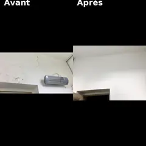
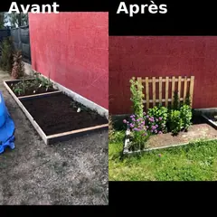
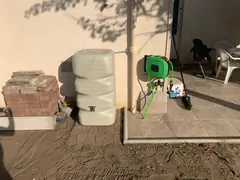
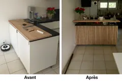
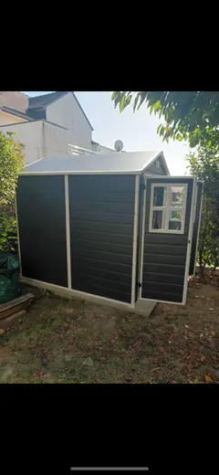

Petits travaux & bricolage
- Montage de meubles, tringles, luminaires
- Petites réparations, joints, silicone
- Pose d’étagères, cadres, miroirs
Petits travaux, jardinage, Aide ponctuelle après maladie ou accident (invalidité temporaire) et aide administrative.
Toujours la même personne, un service de proximité fiable, rapide et premium.
*Selon éligibilité au dispositif fiscal en vigueur (article 199 sexdecies du CGI).
Christophe Rolland
Fondateur de Domus Premium
Je m'appelle Christophe, et depuis toujours j’aime comprendre, réparer et construire. Enfant, je démontais mes jouets pour les remonter, puis je réparais des vélos et des motos. J’ai toujours aimé bricoler et redonner vie à ce qui ne fonctionne plus.
Mon parcours s’est ensuite construit dans plusieurs métiers manuels : menuiserie, chauffage, plomberie, sanitaire, maçonnerie, construction de maisons, reconditionnement de palettes, puis aménagement intérieur et isolation. Chaque expérience m’a appris quelque chose, et surtout confirmé que j’aime aider et dépanner.
Aujourd’hui, après de nombreuses années dans le salariat, j’ai décidé de créer Domus Premium, une entreprise familiale qui reflète mes valeurs : sérieux, honnêteté, proximité et goût du travail bien fait. C’est pour moi un retour à mes premiers amours, avec l’envie de mettre mes compétences et mon savoir-faire au service de ceux qui en ont vraiment besoin.
Domus Premium est une entreprise à taille humaine, née de mes valeurs et de ma passion pour le travail bien fait : le bricolage, les finitions, le service et l’humain avant tout.
Je crois profondément qu’on peut travailler dans ce qui nous passionne. Et Domus Premium est né de cette conviction.
Des interventions soignées, au juste prix, par un interlocuteur unique.
Les prestations réalisées par Domus Premium relèvent du cadre réglementaire des services à la personne. Certaines d’entre elles peuvent ouvrir droit au crédit d’impôt de 50 %, conformément aux dispositions prévues par l’article 199 sexdecies du Code général des impôts.
Pour la catégorie des petits travaux de bricolage, la réglementation limite chaque intervention à une durée maximale de 2 heures. Au-delà de cette durée, la prestation n’entre plus dans le champ des services à la personne et ne peut pas bénéficier du crédit d’impôt.
La liste officielle et complète des activités éligibles est disponible sur le site du ministère de l’Économie : consulter la liste des activités éligibles .
* Pour le petit bricolage uniquement, dans la limite d’une intervention de 2 h. Hors matériel spécifique. Au-delà de 20 km autour de Rennes, un supplément déplacement peut s’appliquer.
| Prestation | Tarif TTC | Crédit d’impôt |
|---|---|---|
| Petits travaux & bricolage (1 h à 2 h) | 30 € / h — minimum 1 h (Rennes intra-muros) | Oui, soit 15 € / h* |
| Intervention prolongée (> 2 h) | À partir de 30 € / h sur devis | Non éligible |
| Forfait ½ journée (4 h) | 120 € | Non éligible |
| Forfait journée (7 h) | 240 € | Non éligible |
* Pour le petit bricolage, seules les interventions d’une durée maximale de 2 heures ouvrent droit au crédit d’impôt de 50 %, dans la limite de 500 € par an et par foyer fiscal. Au-delà de 2 heures, la prestation n’est plus éligible.
Domus Premium vous accompagne pour comprendre comment fonctionne le crédit d’impôt de 50 % et les limites légales applicables aux services à la personne.
Le crédit d’impôt permet aux particuliers de récupérer 50 % des dépenses engagées pour des prestations relevant des services à la personne, dans la limite des plafonds légaux. Il est accordé que vous soyez imposable ou non.
Certaines prestations d’aide au quotidien, d’assistance administrative, d’entretien extérieur ou de petits travaux simples peuvent ouvrir droit au crédit d’impôt, dès lors qu’elles répondent aux critères définis par le ministère de l’Économie et sont réalisées exclusivement à votre domicile.
La loi limite chaque intervention de bricolage à une durée maximale de 2 heures. Au-delà de ce seuil, la prestation ne relève plus des services à la personne et ne peut pas bénéficier du crédit d’impôt, même partiellement.
Non. Il n’est pas autorisé de fractionner artificiellement une intervention continue dans le but de rester éligible au crédit d’impôt. Chaque prestation doit correspondre à une intervention réellement distincte, adaptée et réalisée à des moments différents si nécessaire.
Avant toute intervention, Domus Premium vous informe sur l’éligibilité de la prestation. En cas de doute, nous vérifions ensemble si votre besoin relève du cadre des services à la personne ou d’une prestation hors SAP.
La liste complète et mise à jour est disponible sur le site du ministère de l’Économie : voir la page officielle du crédit d’impôt .
Par téléphone, e-mail ou formulaire, on fait le point ensemble en quelques minutes.
Vous recevez un tarif précis et une date d’intervention proche.
La même personne réalise l’intervention, puis vous recevez une facture.
Rennes et communes proches : Vezin-le-Coquet, Saint-Grégoire, Cesson-Sévigné, Chantepie, Betton, Bruz, Pacé, Chartres-de-Bretagne…
Un retour client aide beaucoup une petite entreprise locale. Si vous avez fait appel à Domus Premium, vous pouvez laisser votre avis directement sur la fiche Google.
Avant/Après et chantiers terminés.

Remise en état d’un mur (rebouchage, lissage, peinture)

Entretien de jardin (désherbage, taille, nettoyage)

Installation d’une cuve de récupération d’eau de pluie + pose dévidoir mural

Création d’un bar/comptoir/façade (ponçage, lasure, finitions)

Montage et ancrage d’un abri de jardin
Une question, un devis ? Réponse sous 24 h.
{kind=link}
{kind=link}
{kind=link}
{kind=link}
{kind=link}